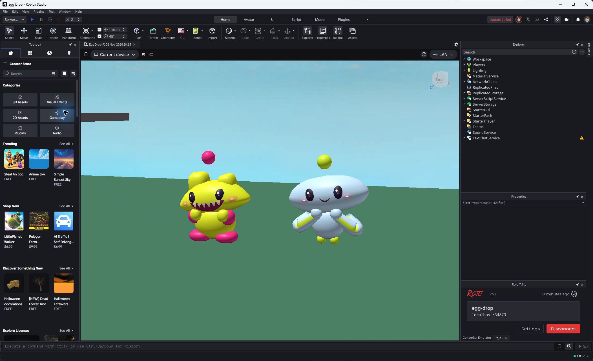
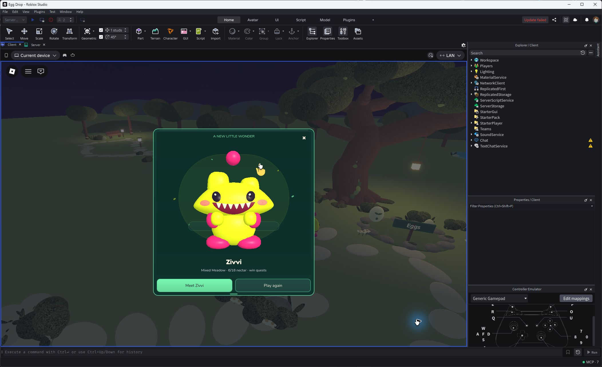
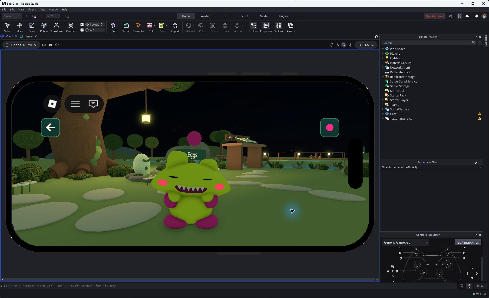
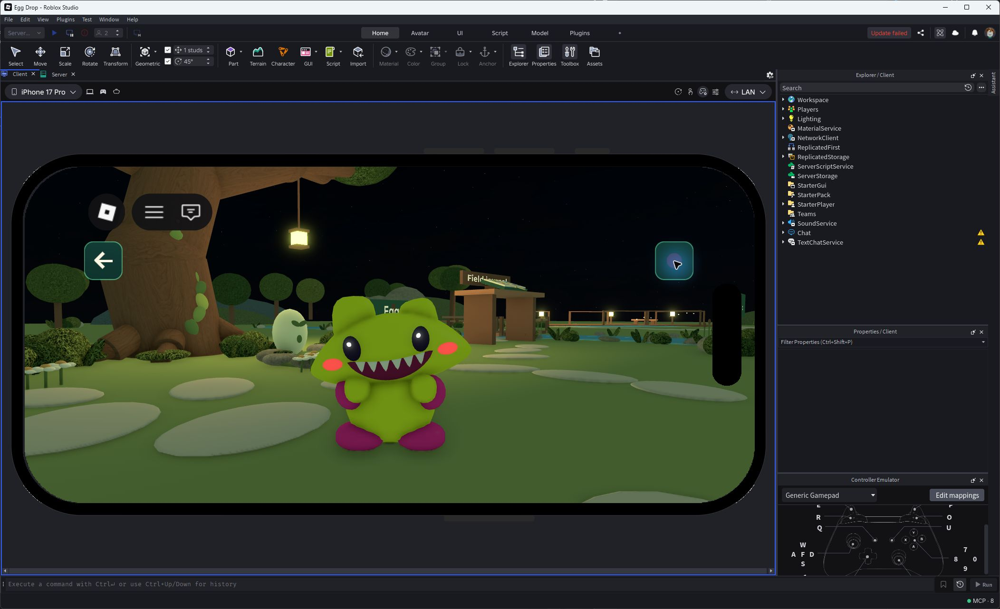
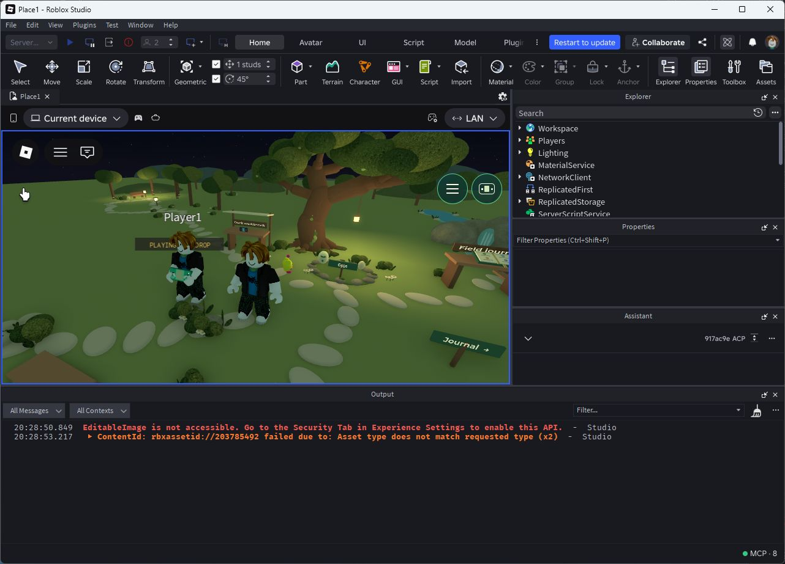
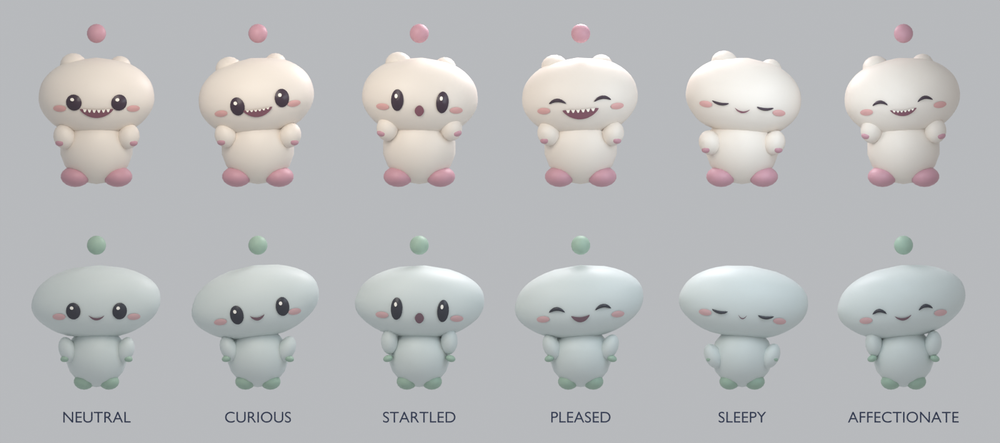
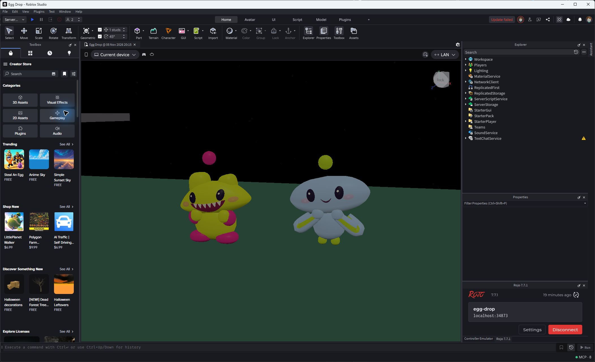

Private v225 Published, runtime9ca53a3. The first playable garden foundation. Evidence types are labeled beside each capture. See BUILD-EVIDENCE.md for exact results and limitations.

Final production factory in a controlled Studio Edit pose; this does not represent two earned pets.

Two actual welcome drops, no resize needed, imported mesh renderer.
Actual final phone emulation. Complete feet, Dot and controls; final framing approved by Astra.

Actual held contact changes the expression; release restores curious eyes. Not physical-phone evidence.


Two real Studio clients. Read the traces for shared toy/greeting state, owner identity, charm propagation and leave cleanup. Not live public-server evidence.

Astra's actual Blender source render; not a Studio behavior test.

Controlled clock23 pose, without the full live Hollow lighting curve. Night body color/fill refinement remains a follow-up.
Phone emulation is not a physical phone. Failed intermediate captures are retained in the evidence folder and omitted here.